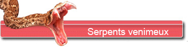
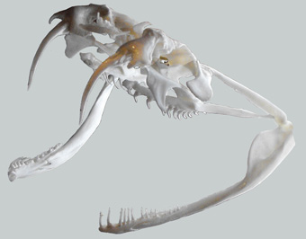
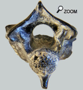
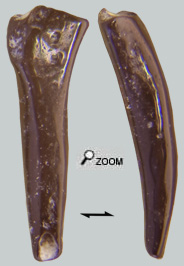

Serpents à venin...

Pendant longtemps les serpents ont été classés assez sommairement en 3 grandes familles, les boïdés, les colubridés et enfin les vipéridés.

Mais le classement des serpents à venins est plus complexe qu’il n’y paraissait: les vipéridés constituent un rameau assez bien identifié avec les vipères et les crotales. Mais d’autres serpents venimeux sont plus apparentés aux couleuvres (Colubridae) qu’aux vipères comme les élapidés (famille des cobras) et les lamprophidés.
Il n’est donc pas possible de parler uniformément de ce groupe de serpents.
Pourtant par commodité, nous regrouperons ici ces reptiles dans la famille des serpents venimeux.
Une enquête difficile...
Dans les faluns d’Anjou Touraine, on retrouve parfois des restes de serpents. La plupart du  temps, il s’agit de vertèbres. Les plus fréquentes sont certainement celles des couleuvres parce que cette famille est la plus répandue au début du miocène. Mais parmi les os que j’ai eu la chance de voir, on pouvait en trouver qui avaient une forme caractéristique des vertèbres de vipéridés avec une hypapophyse assez développée. Le groupe est donc bien présent en Anjou Touraine.
La petite vertèbre montrée ici présente certains caractères de vipères, en particulier elle est relativement courte, la cotyle est de taille assez importante par rapport à l’arc neural, la carène inférieure du centrum semble se prolonger à la manière d’une quille de bateau (expansion osseuse appelée hypapophyse). Attention certaines vertèbres de couleuvres ont une morphologie étonnamment proche (Natricicés)
Même s’il m’est impossible d’affirmer qu’il s’agisse d’une vertèbre de vipère, c’est le fossile de ma collection qui répond le mieux à ce qu’on est en droit d’attendre d’une vertèbre de vipéridé.
Une petite curiosité...
C’est la première fois qu’est déclaré un crochet venimeux issu des faluns. Sous des allures assez anodines d’aiguille de seringue, ce dard comporte quand même 4 caractères distinctifs:
Une structure proximale d’insertion du dard dans l’os support avec un élargissement proximal du crochet
Sur la face antérieure, côté proximal, on peut observer le reliquat d’un trou de liaison entre la glande à venin et l’intérieur du crochet.
Un canal venimeux avec une paroi dense (émaillée) et une section en circonvolutions à partir de plis d’émail, ici en forme de «tête de canard».
Une ouverture du canal à l’extrémité distale pour l’écoulement du venin. Elle devrait s’ouvrir antérieurement et non postérieurement comme observé sur le fossile. Mais ce phénomène est assez bien connu: lors d’une morsure, l’extrémité de l’aiguille de seringue se casse du fait de sa fragilité. De manière contre intuitive, pendant la morsure, le canal s’ouvre donc sur l’arrière et le venin s’écoule par ce biseau de circonstance. |